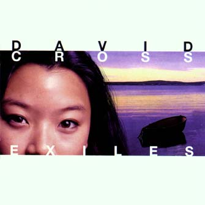
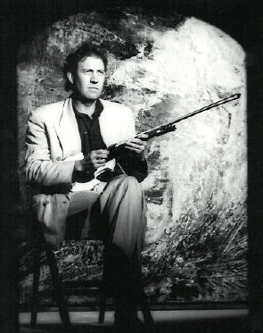
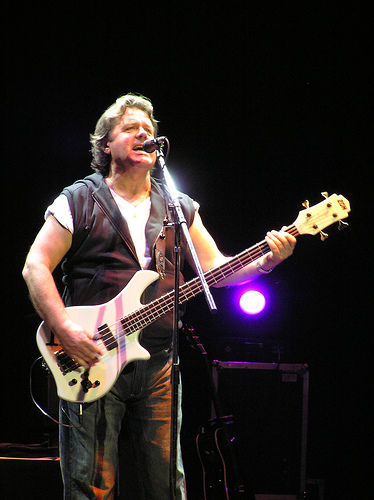
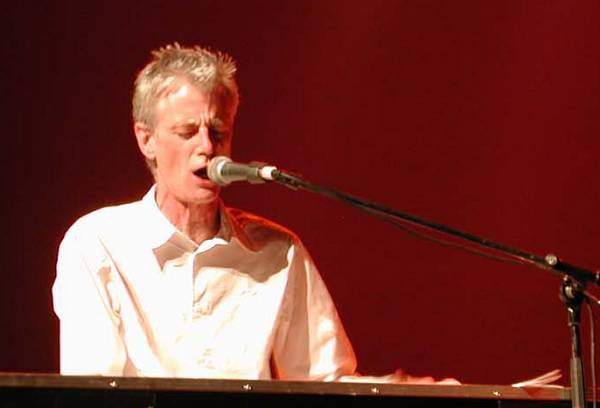

Exiles
Exiles
|
|
|
 (Exilios)
Exelente album de Cross y su banda, editado en 1997. Su título dice mucho, por ser el nombre de un famoso tema del King Crimson de 1973/74, del cual Cross formaba parte; adelanta que habrá reminiscencias de la música de aquella banda, que habrá nostalgia. Y es así. El primer tema es una versión de aquel Exiles. Y lo canta Wetton, como en el original. También participa Fripp en otros temas, y una de las canciones tiene letra de Peter Sinfield, otro cofundador de King Crimson. Pero además de ser nostalgia y reminiscencias de alta calidad, el album tiene mucha fuerza propia. Y como si todo esto fuera poco, hay otro invitado de lujo del rock progresivo: Peter Hammill.
Personal: David Cross (violín), Paul Clark y Peter Claridge (guitarras), Mick Paul (bajo), Dan Maurer (percusión), Dave Kendal (teclados), Pete McPhail (saxo). Invitados especiales: Robert Fripp (guitarra y soundscapes), Peter Hammill y John Wetton (voz). Temas 1.- Exiles (*) 8:57 . Hermosísima versión; y es realmente una versión, está recreada. Y emociona tanto como la original. Voz de Wetton. 2.- Tonk (Cross, Maurer, Paul) 3:45 . Muy buen rock duro, con voz de Hammill y guitarra de Fripp. 3.- Slippy slide (Cross, Maurer, Paul) 4:03 . Instrumental. 4.- Duo (Cross, Fripp) 6:52 . Bellísimo, conmovedor. Instrumental con violín de Cross por sobre los soundscapes de Fripp. El nombre del tema se debe en parte a que participan solo ellos dos, pero también se debe haber elegido para relacionarlo con el tema Trio, igualmente suave y conmovedor, improvisado por Cross-Fripp-Wetton en el '73 y editado en el album "Starless and bible black", como si hubiera una continuidad a pesar del tiempo transcurrido. 5.- This is your life (Cross, Sinfield) 4:40 . Hermosa canción. Voz de Wetton. [letra] 6.- Fast (Cross) 5:39 . Muy buen rock instrumental, con aire crimsoniano. 7.- Troppo (Cross, Maurer, Paul) 8:45 . Canta Hammill y toca Fripp. 8.- Hero (Cross) 10:51 . Otro muy buen instrumental con aire crimsoniano. (*) Nota: en este album la autoría del tema Exiles está acreditada a Bruford/Cross/Fripp/Muir/Wetton/Palmer-James. En "Larks' tongues in aspic", el album donde se editó originalmente, se acreditó a Cross/Fripp/Palmer-James. Y en los discos donde se editó en vivo ("The great deceiver" y "The night watch") a Fripp/Wetton/Palmer-James.    Cross, Wetton y Hammill
|